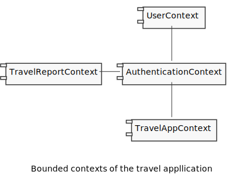
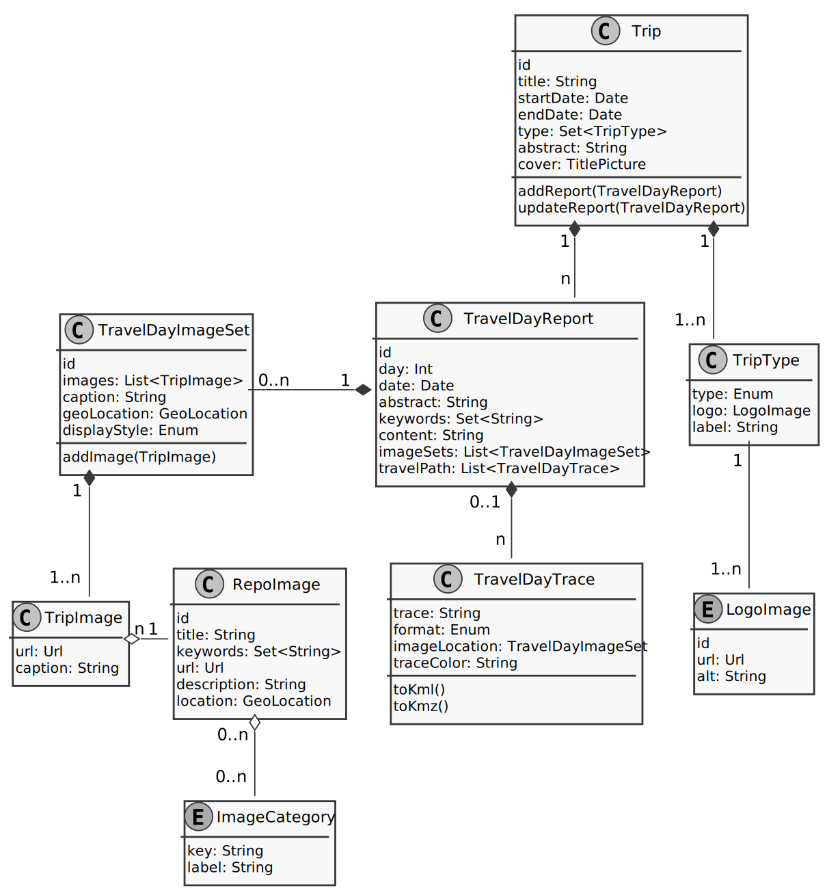
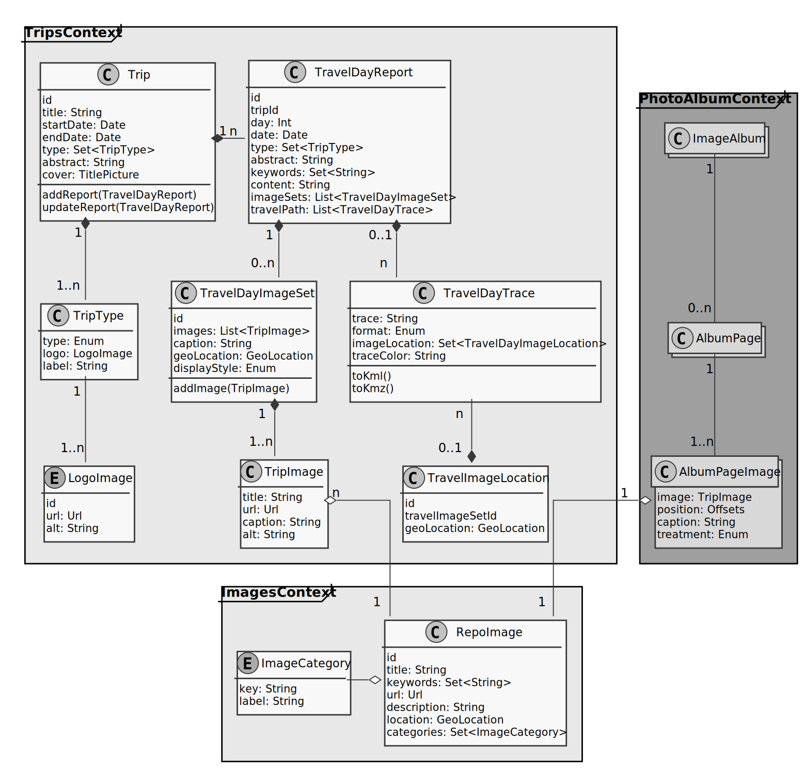

Domain driven design and architecture
So far in this project, we’ve looked at what a user needs to accomplish via domain story telling and then went on to use what we have discovered to create some wireframes, which have already shown us what kind of information we need to collect and how the data will relate to each other.
In this step, I’m going to figure out from the (incomplete) wireframe set
- what data we need to capture,
- how the data relates to each other and
- ways of grouping the artifacts into logical pieces
- parts of the domain language I’m going to use throughout the rest of this project
Along the way we’re probably going to find some edge cases we need to figure out — we always do, don’t we? So let’s dive in …
A first look
When looking at the overview domain story, we can already see a few parts of the system that should be fairly self-contained: First, there is the authentication piece making a brief appearance here, which will govern the functionality such as logins, permissions, user credentials, password resets etc.
Closely related to authentication, represented by the “Traveler” actor in the diagram, is the user context. This also represents a well defined set of functionality that is self-contained: Sign-up, user management and configuration (such as preferences, language etc.).
Although the user and authentication contexts are closely related, and need to work together for the login of a user, one can make the argument, that these should be two separate bounded contexts: The user context is for managing the users and the data related to them, whereas the authentication context’s task is to handle the authentication throughout the system.
And it could be more than humans that need authentication: Other, non-human systems, even our own, might need to get authenticated and the mechanism for authentication might differ between the various actors.
Another factor in the decision could be the relative frequency with which the user information and authentication information is accessed: Users usually don’t spend a lot of time managing their accounts, but authentication potentially needs to happen on every request to an API or loading of a new screen. Separating these concerns will allow more control when scaling the system.
At this point, a little aside on the management of the login: Since we’re going to have to check the authentication potentially on every request, it would be advantageous not to have to access a database on every request. For this functionality, it might be beneficial to use JSON Web Tokens (JWT), a technology where claims in JSON format can be validated using a private key on the server and a signature in the JWT. I don’t want to make a decision right now, but it is a good thought to keep in mind for later.

Next up is the “travel report”. This report would make a logical bounded context, because it deals with a number of closely related aggregates, value objects and entities which are mostly self-contained in functionality but need to work together. This bounded context can present a well-defined interface to the outside world with which to integrate.
Other bounded contexts could talk to the travel report context using some of the DDD paradigms such as a published language or an anti-corruption layer (ACL) to not mix (pollute) the domain languages in the various bounded contexts.
Finally, we have the icon for “Travel Journal app” in the domain story (or “TravelAppContext” in the UMP diagram shown above). From the domain story drawing we can see that the functionality of this context is to provide a somewhat generic overview of existing trips reports, create new ones, and be a jumping-off point for any other contexts we might identify in the future.
In this small project, it is hard to see exactly what this context, if we decided to split this off into its own, would include, but it’s at the very least a good indicator that this might be its own context in the future.
A closer look at the trip context
Now that we have the general lay of the land, let’s take a closer look at the trips bounded context, in particular the data classes involved in this part of the domain and how they are related to each other. I will leave out for now other architectural concepts such as controllers, API interfaces, services etc. That will be topic for another post, as we get closer to actually implementing this system on the backend. There will also be a frontend architecture treatment, since the domains will be the same, but the view classes will be different from what we need on the server backend.
Travel trips will be the main data we’re going to handle in our application, so we can start our discussion there. From the wireframes in the previous post we can see that a trip consists of the following data for now:
- title
- start and end dates
- one (or more) activity types such as biking, hiking etc.
- a brief summary as
- a cover picture, so we can make the trip appealing in a listing situation
Right on the home page wireframe, we see that we need to display a list of trips with some
of that data in addition to a map presenting the locations of those trips. In the UX, it was
decided that for now, we’re going to simply put a marker at the center of the trail, so
we can deduce that we should add a property for the marker coordinates to the Trip class.
The other option would be to store an entire GPS trace with the Trip instance, but that might
cause several headaches later:
- Our trip consists of multiple days, so the amount of data to store would be large
- Each stage of the trip will likely have its own trace, so loading the data from a database for each trip would be more difficult and likely slower, or we’d have to duplicate the data and keep it in sync should it change.
- From a UX perspective, clicking a thin line is harder than clicking on an icon, in particular
when several trips overlap, are close to each other or cross each other in the same geographic
region. Having an icon
- allows us to show more details on hover in addition to
- contain an icon indicating the type of trip.
For those reasons, the decision with a single icon makes sense and is easier to implement, despite
requiring the addition of a property to the Trip entity.
In terms of domain driven design principles, the Trip is an Aggregate root “containing”
several Entities, to which we’re going to come next.
We now have a representation for our trip, but not for the details. A trip in this scenario is
made up of days of travel, so we should reflect that with a TravelDayReport class, which
will contain the content for the day and will have its own “page” in the application. This
class will contain
- the date of travel
- a number representing the day of the trip (for convenience)
- a summary of the day’s activities the user can supply
- a list of keywords so users can find it to get inspiration
- the main content for the trip report for that date
This is another entity with relationships to two lists for
- an entity to store the information on the path or path section taken
- an entity containing an image set for that day’s travel.
Both are implemented as Lists because a travel day might be encompassing several different
modes of transportation, which we might want to later represent differently visually. For
example, a user might go hiking one way and take a tour boat or canoe back to the starting
place (been there, done that).
The same holds true for the images, as a user might not want to place all images in a particular spot on the post, but maybe break images up with the flow of the story. These are reasonable assumptions, and implementing these two relationships as one-to-many is prudent and should not significantly increase development time.
To get certainty in this case, we should ask the customer whether that is something that is already considered and whether it is desirable later on to have trips which are not split after that feature will have been rolled out to customers.
Speaking of images …
Managing images
When thinking of the management of images, a fundamental question is whether a particular image can only be used in one or in many posts. If it is to be used in many posts, it is reasonable to assume that the user wants to change the image caption on a per-story basis. If the client agrees with that assessment, it leads to the following two likely classes:
- A globally usable
RepoImageclass, which serves to manage the images globally and contains information specific to the image, such as a title, keywords, a URL under which the image is stored on a CDN, a generic description of the image to be used in HTMLaltattributes as well as possibly a set of coordinates for the location the image was taken in. - A trip-specific, smaller
TripImageclass which stores the URL, geo location and a caption specific to the post/story.
Skipping the discussion of a few more classes we can identify, we end up with a class diagram such as this (ignoring authentication for now):

Introducing structure
That class diagram already contains a lot of detail knowledge, but it is currently just a bunch of classes which communicate with each other, exchange data etc. To improve on this state, we’re going to group the various classes using the domain driven design (DDD) approach by sleuthing out which functionality belongs together, and which can be separated, communicating with each other through interfaces and other approaches used in DDD (see, for example, Vaughn Vernon’s “Implementing Domain Driven Design” for possible integration patterns between bounded contexts such as Published Language or Anticorruption Layers, a.k.a. ACLs).
Looking at the class diagram, we see that a lot of the classes (entities and value objects in DDD speak) have to do with managing trips. Not listed among the classes are things like services and repositories, which take care of the interaction of entities and object persistence, respectively. One such example is a service which would manage the addition or modification of a day report to a trip, since here, we’d have to modify two entities: the TripReport and the report for the day. If one fails, we can encapsulate the roll-back in a service.
One question from the UML diagram is where the image management belongs. The images belong to the trips, but should they also be part of the same bounded context?
I’d argue that the image management is its own bounded context, which integrates with the Trips Context through one of the integration patterns. The reason for this decision is that
- at this point it is a one-to-many relationship, where the
RepoImageinstance does not need to have a reference to the trips it is being used in. - we need to store a dedicated caption per story anyway, so we need a simplified reference to the image for our trips
In the UML diagram we see the TripImage class, which serves as a simplified proxy of the
RepoImage in the context of travel. The use of an anticorruption layer (ACL) on the side
of the RepoImage context would allow us to separate not only the functionality but also the
nomenclature used in the two domains: While an image might be referred to as TripImage in the
trips context to distinguish it from other images, e.g. advertising images, or portraits of
account holders (UserImage or ProfileImage), in the ImagesContext it might simply be Image or even
Photo.
This one-way relationship has the effect that we can delete the image reference for the trip
and still have the image available for other pages/stories in the ImageContext. Conversely,
removing an image from the ImageContext would invalidate the URL of the TripImage in the
TripContext. This means we now have the option to knowingly ignore that fact and try to display
missing images or put some smarts into the TripsContext to load images and filter out ones
that return a 404 or 410 HTTP code.
Another argument for separating the images from the trips into their own context is that we can
now easily add new image-based features, such as photo albums which can be put together and sent
to a printer from the application, without having to go through trips. This is shown in the
UML diagrm below, which introduces a new (and incomplete) PhotoAlbumContext for illustration.

Adding functionality, considering storage
We now have a nice idea of what data types and classes we need, but not quite yet how we should structure our code into Aggregates, Entities and Value Objects.
It would be natural to model our Trip entity as an aggregate root, which contains all the
other entities and value objects. The consequence of that would be a humongous object that
would take a long time to create from the database, with only a small subset of the data needed
for each use of the aggregate — This is not even mentioning the required bandwidth to
ship such a massive object over the wire to the requesting computer.
To reduce the load on the application, it would be good to reduce the amount of unnecessary database requests and data to be loaded for each request, yet still encapsulate the data in an aggregate and not expose the functionality of contained entities to the outside.
A way to store data
One possible way out of the data glut would be to break with the paradigm to store data normalized in the database. The following data sets might be candidates for duplication, judging by the screen mockups the UX designer has put down the pipe for us:
- A
Tripdoesn’t need all the data from each travel day, just a summary, the sequence number (as theTriphas the travel dates stored) and possibly the travel mode. - Since we decided to represent a trip on the overview map as a pin of some sort, we don’t need to access the GPS trace entry at all for the overview.
- Adding an image to an image set should be side-effect free as we’re simply creating a new
instance of a
TripImage, which can be modeled as a Value Object, i.e. a class without an id.
This deduplication bears the risk of data getting out of sync. This is where a service will help. Services are stateless objects that encapsulate some aspect of the business logic. To defuse this data-out-of-sync problem, we could create a service whose task it is to update a trip day and synchronize it with the data on the trip instance.
The service would be called to perform the data mutation in a single place, use an injected repository to store the mutated objects. Having the mutation in a single class would also enable us to create compensation mechanisms in case only one of the mutations executes successfully. Since we would return the user to an overview page of some sort in this application, the service does not need to return the mutated objects, because the new landing page will request the needed data from the server.
One other paradigm that supports us in this task is immutability of the data objects in question: When the second of the two persistence calls to a repo fails repeatedly, we still have the original instance accessible and can easily roll back the first change. This immutability was demonstrated for the Option monad implemented in JavaScript on this site.
As a final point regarding storage is the form of storage: Document-based or table-based? For this app’s use case, I would argue for a document-based storage, because the document-based approach would assist us in creating nested, denormalized data sets and make the data structure clearer:
- In the aforementioned case of the
trip, it would be trivial to create a nested data structure which would contain the data for theTripas well as an array for the summary of each day of the trip. - The same argument holds for the
TravelDayImageSethoused in theTravelDayReport. Here, one can consider storing the set information together with theTripImageinformation in a sub-document of theTravelDayReportto avoid multi-join on the DB. The data for each entry is manageable, so it would not make the record explode in size, since we’re storing the images on a CDN and only store their URLs in the DB this would cut out a significant amount of work for the DB to collect all the records for the image from a traditional relational database.
Summary
This was a whirlwind tour through setting up a server-side architecture for a large part of the application to be built. We’ve looked at the following topics together:
- Which data types are needed for the application to store all the information as well as
- What is the relationship between them,
- How does the UX analysis inform some optimizations we can consider,
- The way domain driven design can inform the structuring of the code in our application and
- Which flavor of database would be a good fit for this project.
We ended up with a few bounded contexts, namely the TripsContext, ImagesContext, a future PhotoAlbumContext and skipped talking about two other contexts, the UserManagementContext and AuthorizationContext. These are left for another time…